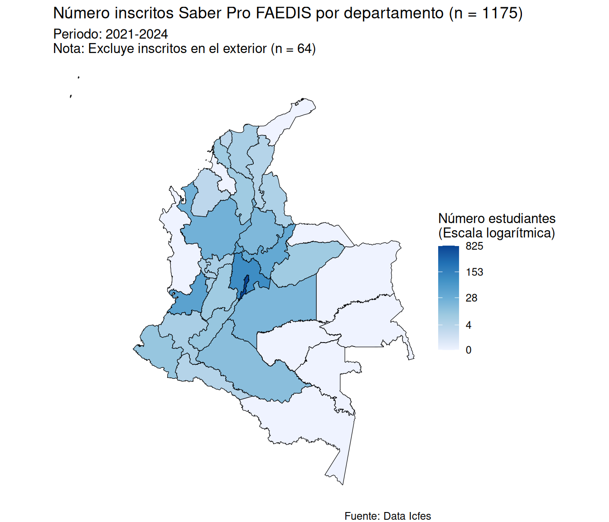

sf y ggplot2 a partir de datos geoestadísticos en formato .gpkg
.gpkg)Este capítulo se basa en (Lovelace et al., 2025), (Popovic, 2025) y (Wilke, 2019) así como en la documentación oficial de ggplot2 y sf donde tiene como propósito introducir la importación y posterior visualización de datos geoestadísticos a través del formato GeoPackage (.gpkg) utilizando el paquete sf y ggplot2 con información del Geoportal del Departamento Administrativo Nacional de Estadística (DANE) y los resultados del examen Saber Pro del grupo de competencias genéricas correspondientes a programas de pregrado de la Facultad de Estudios a Distancia (FAEDIS) de la Universidad Militar Nueva Granada (UMNG).
Exploraremos los siguientes aspectos:
.gpkg)?.gpkg)?Para desarrollar el contenido de este capítulo es necesario que instales el paquete sf teniendo en cuenta la Sección 4.2, tal como se señala a continuación:
install.packages("sf")También es necesario que descargues el archivo señalado a continuación y lo incluyas dentro de la carpeta data, respecto a lo descrito en la Nota 6.1:
Adicionalmente, es necesario que hayas exportado y guardado el archivo 2021-2024_saber-pro-genericas_faedis_ajustado.rds en la carpeta data, tal como se señaló en el Listado 11.14. En caso que no lo hayas hecho es necesario que lo descargues y lo incluyas dentro de la carpeta data:
En caso que hayas seguido estas indicaciones, procede a crear una nueva carpeta llamada 015_importar-datos-gpkg-en-r y dentro de ella genera el archivo 001_importar-datos-formato-gpkg.R, siguiendo las pautas de la Sección 4.4.
En este capítulo realizarás un mapa coroplético señalando el número de inscritos a la prueba Saber Pro por departamento para los programas de pregrado de la Facultad de Estudios a Distancia de la Universidad Militar en el periodo 2021-2024, tal como se indica en la Figura 15.1.

sf y ggplot2 a partir de datos geoestadísticos en formato .gpkg
.gpkgCuando trabajes con datos espaciales es necesario utilizar un formato para almacenarlos y compartirlos. Durante muchos años, el estándar más utilizado en los Sistemas de Información Geográfica (SIG) fue el formato Shapefile (.shp). Sin embargo, el .shp presentaba limitaciones para el análisis de datos moderno (ver Jachym (2017)).
Para superar estas restricciones fue creado el formato GeoPackage (.gpkg). A diferencia de otros formatos tradicionales, GeoPackage almacena toda la información espacial y sus tablas asociadas dentro de un único archivo. Por “debajo”, un archivo .gpkg es en realidad una base de datos SQLite ligera y portable.
Una de las mayores fortalezas del formato .gpkg es su naturaleza abierta, no propietaria e independiente de plataforma. Esto significa que cualquier persona puede utilizarlo sin necesidad de adquirir licencias comerciales de software y puede abrirse con las mismas garantías en lenguajes de programación como R.
Esta apertura es promovida y regulada por el Open Geospatial Consortium (OGC). El OGC es un consorcio internacional sin fines de lucro fundado en 1994, integrado por cientos de organizaciones de gobiernos, empresas comerciales y entidades académicas alrededor del mundo. Su misión es definir consensos técnicos y estándares abiertos para que los datos de localización sean fáciles de encontrar, accesibles, interoperables y reutilizables. Dentro de este marco, el estándar oficial OGC GeoPackage fue diseñado para garantizar la interoperabilidad universal, permitiendo que la información geoespacial fluya sin fricciones entre diferentes herramientas y sistemas.
Para acceder a datos geoestadísticos de Colombia, existen 2 plataformas institucionales donde es posible consultar y descargar información geográfica oficial en formatos abiertos como GeoPackage (.gpkg):
Geoportal del Departamento Administrativo Nacional de Estadística (DANE): a través del Marco Geoestadístico Nacional (MGN), el DANE ofrece un sistema diseñado para referenciar la información estadística con su localización geográfica en el país. Este marco estructura el territorio en áreas geoestadísticas como departamentos, municipios, cabeceras y centros poblados, abarcando los \(1102\) municipios, \(18\) áreas no municipalizadas y la isla de San Andrés. El archivo cartográfico departamental que utilizaremos a lo largo de este capítulo proviene de este sistema.
Portal de información geoespacial - Colombia en Mapas: es una plataforma administrada por el Instituto Geográfico Agustín Codazzi (IGAC) en conjunto con la Infraestructura Colombiana de Datos Espaciales (ICDE). Centraliza la información geográfica de Colombia y permite explorar y descargar capas temáticas de múltiples entidades públicas en formatos abiertos.
.gpkgPara importar un archivo en formato .gpkg a R, se utiliza la función read_sf() del paquete sf. Dado que sf no hace parte del tidyverse, es necesario cargar previamente el paquete mediante library(sf) (ver Sección 4.3) en el archivo 001_importar-datos-formato-gpkg.R. Para realizar la importación, la función read_sf() utiliza el parámetro dsn (en inglés Data Source Name), en el cual se especifica como argumento la ruta y el nombre del archivo con extensión .gpkg que se desea leer.
Para importar el conjunto de datos de departamentos de Colombia en formato .gpkg (ver Nota 15.1) y asignarlo a una variable denominada col_dpto_sf, ejecutarás el siguiente código, tal como se señala a continuación:
read_sf() para importar un archivo de datos espaciales en formato .gpkg
# Cargar paquetes ----
library(sf)
# Importar datos ----
col_dpto_sf <- read_sf(
dsn = "data/nivel-departamento_version-mgn-2025_geopackage.gpkg"
)
col_dpto_sfSimple feature collection with 33 features and 8 fields
Geometry type: MULTIPOLYGON
Dimension: XY
Bounding box: xmin: -81.73562 ymin: -4.229406 xmax: -66.84722 ymax: 13.39473
Geodetic CRS: WGS 84
# A tibble: 33 × 9
dpto_ccdgo dpto_cnmbr dpto_ano_c dpto_act_a dpto_narea
<chr> <chr> <int> <chr> <dbl>
1 05 ANTIOQUIA 1886 Constituci… 62789.
2 08 ATLÁNTICO 1910 Ley 21 de … 3324.
3 11 BOGOTÁ, D.C. 1538 Constituci… 1621.
4 13 BOLÍVAR 1886 Constituci… 26681.
5 15 BOYACÁ 1886 Constituci… 23073.
6 17 CALDAS 1905 11 de Abri… 7422.
7 18 CAQUETÁ 1981 Ley 78 del… 92709.
8 19 CAUCA 1857 15 de juni… 31261.
9 20 CESAR 1967 Ley 25 21… 22498.
10 23 CÓRDOBA 1951 Ley 9 del … 25083.
# ℹ 23 more rows
# ℹ 4 more variables: dpto_nano <int>, shape_Leng <dbl>,
# shape_Area <dbl>, geom <MULTIPOLYGON [°]>En el Listado 15.1, primero se carga el paquete sf mediante library(sf). Posteriormente, se utiliza la función read_sf() con el parámetro dsn asociado al argumento "data/nivel-departamento_version-mgn-2025_geopackage.gpkg" para leer la capa cartográfica y asignar explícitamente el objeto resultante a la variable col_dpto_sf. Finalmente, al evaluar col_dpto_sf se imprime en la consola tanto el resumen de metadatos espaciales como las primeras observaciones. El objeto resultante col_dpto_sf se conoce como un objeto sf en R (ver Sección 15.3.1), el cual extiende el concepto de tibble (ver Sección 5.4) al incluir adicionalmente información geográfica.
sfEl paquete sf recibe su nombre del estándar Simple Features, un estándar internacional abierto definido por el OGC. Este estándar describe una forma unificada de representar objetos geográficos del mundo real a través de geometrías y atributos. Al inspeccionar col_dpto_sf en la consola, notarás 2 componentes principales:
Un encabezado de metadatos espaciales
Simple feature collection with 33 features and 8 fields
Geometry type: MULTIPOLYGON
Dimension: XY
Bounding box: xmin: -81.73562 ymin: -4.229406 xmax: -66.84722 ymax: 13.39473
Geodetic CRS: WGS 84
# A tibble: 33 × 9Una tabla de datos
El encabezado inicial resume las propiedades cartográficas fundamentales de la capa geográfica:
Simple feature collection with 33 features and 8 fields: señala que el objeto contiene \(33\) observaciones espaciales correspondientes a los \(32\) departamentos de Colombia más Bogotá y \(8\) variables adicionales.
Geometry type: MULTIPOLYGON: indica que las geometrías son multipolígonos. Se utiliza este tipo porque varias entidades territoriales del país están conformadas por más de un fragmento de tierra discontinuo (p. ej., el archipiélago de San Andrés, Providencia y Santa Catalina).
Dimension: XY: define que las coordenadas espaciales se representan en 2 dimensiones: longitud \(X\) y latitud \(Y\).
Bounding box: es la “caja” delimitadora que abarca los puntos geográficos extremos con occidente xmin, sur ymin, oriente xmax y norte ymax, dentro de los cuales se ubican todas las geometrías de la capa.
Geodetic CRS: WGS 84: indica el Sistema de Referencia de Coordenadas (en inglés Coordinate Reference System (CRS)).
En caso que no entiendas a profundidad algunos elementos descritos anteriormente respecto al encabezado inicial del objeto sf relacionado con col_dpto_sf, puedes consultar una explicación detallada en (Lovelace et al., 2025, Capítulo 2).
Sin embargo, esta lectura no es un requisito para comprender los temas abordados en el Capítulo 15 debido a que no se pretende desarrollar una explicación exhaustiva de sistemas de información geográfica en el libro. Más bien, se busca proporcionar al lector las bases prácticas necesarias para importar, transformar y visualizar datos espaciales combinándolos con otras variables de interés.
tibble con una columna geométricaInmediatamente después del encabezado de metadatos espaciales, el resultado muestra # A tibble: 33 × 9. Esto evidencia una de las mayores ventajas del paquete sf:
Un objeto
sfes en esencia unatibble(o un objeto similar) de R, extendido con capacidades geográficas.
Las \(9\) columnas de la tibble corresponden a las \(8\) variables no espaciales más una columna especial denominada geometry list-column donde en el caso de col_dpto_sf tiene asociada el nombre de geom. A diferencia de las columnas tradicionales que almacenan números o texto, la columna geom:
Es una columna de lista (en inglés list-column): cada celda contiene una lista (ver Nota 15.3) con todas las secuencias de coordenadas necesarias para dibujar los límites geográficos del departamento correspondiente.
Tiene una clase especial <MULTIPOLYGON [°]>: donde MULTIPOLYGON especifica el tipo de figura geométrica y el símbolo [°] indica que las unidades de medida son grados decimales (latitud y longitud en grados decimales), en concordancia con el Sistema de Referencia de Coordenadas WGS 84.
En el Capítulo 20 se abarcará con más detalle el concepto de lista, un tipo de dato señalado de manera superficial en la Tabla 10.2.
Gracias a esta arquitectura, no es necesario aprender un conjunto totalmente diferente de herramientas para manipular información geográfica. Puedes aplicar sobre un objeto sf las mismas funciones del tidyverse relacionadas con manipulación de datos (ver Sección 15.3.2). Además haciendo uso del paquete ggplot2 es posible visualizar datos geoestadísticos integrándolos con otras variables de interés (ver Sección 15.4)
Finalmente, con respecto a la tabla de datos, a continuación se describe cada una de las variables en nivel-departamento_version-mgn-2025_geopackage.gpkg:
Donde para la realización de la Figura 15.1 utilizarás sólo las variables dpto_ccdgo, dpto_cnmbr y geom.
Para incorporar los resultados del examen Saber Pro y llevar a cabo la manipulación de datos, primero es necesario cargar el paquete tidyverse e importar el conjunto de datos 2021-2024_saber-pro-genericas_faedis_ajustado.rds (ver Sección 12.1) mediante la función read_rds() del paquete readr, tal como se indica a continuación:
tidyverse e importar el conjunto de datos de variables no espaciales
# Cargar paquetes ----
library(tidyverse)
# Importar datos ----
resultado_saber_pro_ajustado <- read_rds(
file = "data/2021-2024_saber-pro-genericas_faedis_ajustado.rds"
)En el Listado 15.2, se carga el paquete tidyverse y se utiliza la función read_rds() asignando la ruta del archivo .rds al parámetro file para asociar el conjunto de datos con el nombre resultado_saber_pro_ajustado.
Una vez importados los datos espaciales y no espaciales, el siguiente paso consiste en preparar las variables requeridas para construir el mapa coroplético de la Figura 15.1, tal como se señala a continuación:
count()
# Seleccionar ----
col_dpto_sf <- col_dpto_sf |>
select(
dpto_ccdgo,
dpto_cnmbr,
geom
)
# Contar ----
resultado_saber_pro_ajustado <- resultado_saber_pro_ajustado |>
count(
estu_cod_depto_presentacion
)Respecto al Listado 15.3 en col_dpto_sf, se conservan únicamente el código del departamento (dpto_ccdgo), el nombre del departamento (dpto_cnmbr) y la geometría (geom) utilizando la función select() de dplyr (ver Sección 10.1.1.2). Luego en resultado_saber_pro_ajustado, se calcula el número de estudiantes que presentaron la prueba en cada departamento utilizando la función count() de dplyr.
La función count() de dplyr permite contabilizar de forma rápida el número de observaciones asociadas a los valores de una o más variables. Al suministrarle como argumento estu_cod_depto_presentacion, count() agrupa las observaciones por departamento y crea automáticamente una nueva columna denominada n, la cual contiene la cantidad total de estudiantes que presentaron el Saber Pro en cada departamento. Cabe resaltar que la función count() no descarta los valores ausentes (NA), sino que también los contabiliza y los incluye por defecto en la última fila de la tabla resultante, lo cual corresponde a los estudiantes que presentaron el examen en el exterior.
Para generar parte del título y subtítulo del mapa coroplético en la Figura 15.1 de forma dinámica y reproducible, es conveniente calcular 2 valores:
El total de estudiantes inscritos
El número de estudiantes que presentaron el examen en el exterior donde el código del departamento no se encuentra disponible y se registra como NA.
Para ello, se crean 2 variables auxiliares denominadas n_na y n_total, tal como se señala a continuación:
# Variables auxiliares ----
n_na <- resultado_saber_pro_ajustado |>
pull(n) |>
last()
n_total <- resultado_saber_pro_ajustado |>
pull(n) |>
sum()En el Listado 15.4, se utiliza la función pull(), la cual se introdujo al final de la Sección 4.4 con el propósito de extraer una columna de una tabla de datos y convertirla en un vector atómico de R. La lógica detrás del uso de last() y sum() junto con pull() comprende los siguientes aspectos:
Al aplicar resultado_saber_pro_ajustado |> pull(n), se extrae la columna con los conteos en forma de vector numérico.
La función last() extrae el último elemento de dicho vector. Dado que count() ubica por defecto los valores faltantes (NA) en la última fila del conteo, last() recupera directamente el número de estudiantes inscritos en el exterior (n_na).
Por su parte, la función sum() suma todos los elementos del vector numérico obtenido con pull(n), permitiendo calcular el total general de estudiantes inscritos (n_total).
El siguiente paso consiste en consolidar la información cartográfica con los conteos de estudiantes. Para ello, se utilizan Mutating joins (ver Sección 11.6) mediante la función left_join() (ver Sección 11.6.2), tal como se señala a continuación:
left_join() y tratamiento de valores ausentes con replace_na()
# Consolidar tablas ----
col_dpto_saber_pro_n <- col_dpto_sf |>
left_join(
y = resultado_saber_pro_ajustado,
by = join_by(
dpto_ccdgo == estu_cod_depto_presentacion
)
)
# Limpiar valores ausentes ----
col_dpto_saber_pro_n <- col_dpto_saber_pro_n |>
replace_na(
replace = list(
n = 0
)
)En el Listado 15.5 se llevan a cabo 2 tareas fundamentales:
Unión de tablas con left_join(): se conservan todas las entidades espaciales de la capa geográfica col_dpto_sf a la izquierda, incorporando a la derecha la columna n de resultado_saber_pro_ajustado. La correspondencia entre ambas tablas se define a través de la función join_by(), emparejando el código del departamento dpto_ccdgo con el código de presentación estu_cod_depto_presentacion.
Tratamiento de valores ausentes con replace_na(): en aquellos departamentos donde ningún estudiante presentó la prueba Saber Pro no existe una fila correspondiente en la tabla de conteos, por lo que left_join() les asigna inicialmente un valor ausente (NA) en la columna n. Para corregir este aspecto y reflejar que en esos departamentos hubo \(0\) estudiantes, se utiliza la función replace_na() del paquete tidyr.
El propósito de la función replace_na() es reemplazar los valores ausentes (NA) por un valor específico en una o más columnas. Para ello, se utiliza el parámetro replace, el cual recibe como argumento un objeto de tipo lista (ver Nota 15.3). Al especificar replace = list(n = 0), se indica de forma explícita que cualquier valor NA en la columna n debe sustituirse por 0.